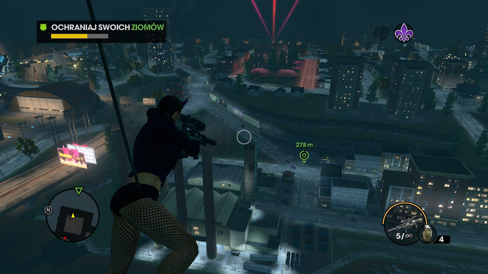
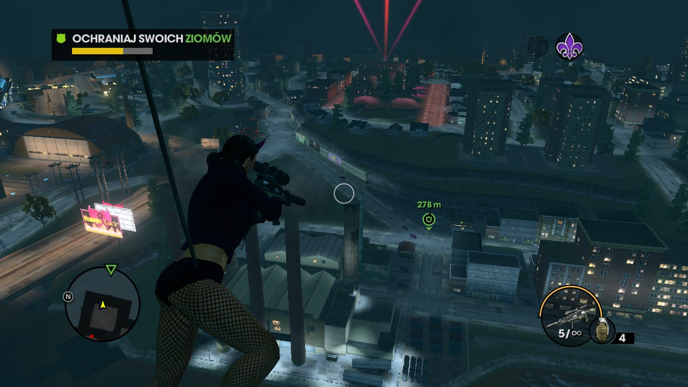
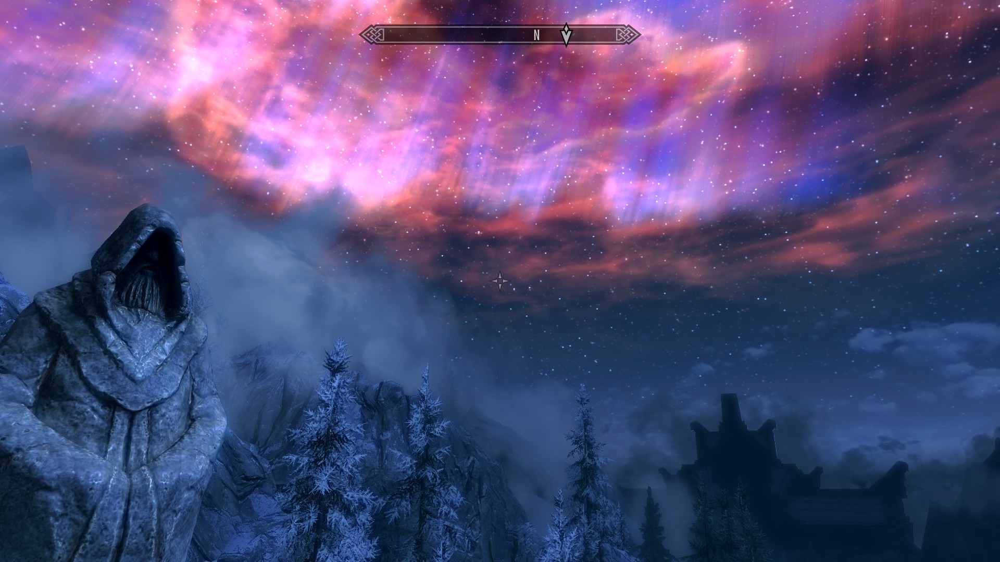
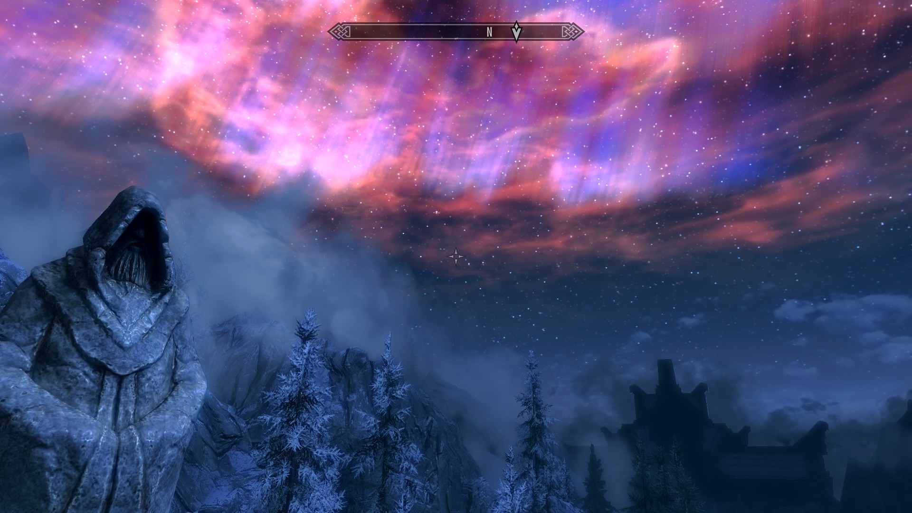

Stardew Valley
Czas gry: 112 h
„Stardew Valley to niekończące się RPG o życiu na farmie. Odziedziczyłeś kawałek ziemi po swoim zmarłym dziadku w krainie Stardew Valley. Wyposażony w niezbędne narzędzia i niepełny portfel, rozpoczynasz całkowicie nowe życie.”
Nie spodziewałam się, że tak niepozorna gra aż tak mnie wciągnie, jednak po ponad stu godzinach nadal nie zdobyłam wszystkich osiągnięć i wyznaczonych przez siebie celów. Na koloniach zapytana o zainteresowania odparłam: „Gram w farme i mam dinozaury w kurniku!”
 

Saints Row: The Third
Czas gry: 26 h
„Gracz wciela się w bohatera poprzedniej części serii, przywódcy organizacji Świętych z Trzeciej Ulicy. Razem z Johnnym Gatem, Shaundi i wieloma innymi gangsterami podejmuje on próbę utrzymania na wodzy swojej organizacji przestępczej, której potęga wytrwale tworzona w poprzednich odsłonach serii.”
Zanim mogłam zagrać osobiście w tę grę, spędziłam wiele godzin na oglądaniu jej i z pewnośćią musze przyznać, że to jedna z tych gier, do których mam największy sentyment. Sama rozgrywka jest przyjemna, niewymagająca i bardzo zabawna.

The Binding of Isaac: Rebirth
Czas gry: 190 h
„Isaac wraz z matką mieszka w małym domu na wzgórzu. Podczas zabawy Isaaca klockami jego matka słyszy głos z góry nakazujący jej poświęcić syna. Fabuła gry skupia się na ucieczce Isaaca przed jego szaloną matką. Podczas rozgrywki gracz napotyka wiele nawiązań do Biblii.”
Tak samo jak Saints Row, Isaaca oglądałam przez wiele lat aż w końcu otrzymałam możliwość grania w niego. Aktualnie posiadam 242 osiągnięcia na 403 możliwe i licze, że kiedyś uda mi się zebrac je wszystkie.
 

The Elder Scrolls V: Skyrim
Czas gry: 77 h
„Gracze wcielają się w rolę jednego z ostatnich łowców smoków (dovakhin) i podążając tropem starożytnej przepowiedni próbują powstrzymać nadejście Alduina, boga zniszczenia, który zagraża całemu kontynentowi Tamriel.”
Tak samo moja miłość zaczęła się od oglądania, a zakończyła na chwilowym zastoju w trakcie przechodzenia pierwszego dodatku (naprawdę nienawidzę krasnoludzkich jaskiń!). Mimo tylu lat nadal podziwiam widoki rozciągające się wokół krainy.


League of Legends
Czas gry: 1669 h
„League of Legends to drużynowa gra strategiczna, w której dwie drużyny składające się z pięciu potężnych bohaterów walczą ze sobą, by zniszczyć bazę przeciwnika. Wybieraj spośród ponad 140 bohaterów, by przeprowadzać epickie zagrania, zabijać wrogów i niszczyć wieże, zmierzając po zwycięstwo.”
W lola gram od około czterech lat, gdzie pierwsze dwa lata polegały na klikaniu kilka razy na mapę przy 8 FPS i strasznym pingu (nawet całkiem nieźle się wtedy bawiłam). Zeszły sezon skończyłam w Goldzie 3, jednak w tym chciałabym wbić jeszcze wyższą rangę.